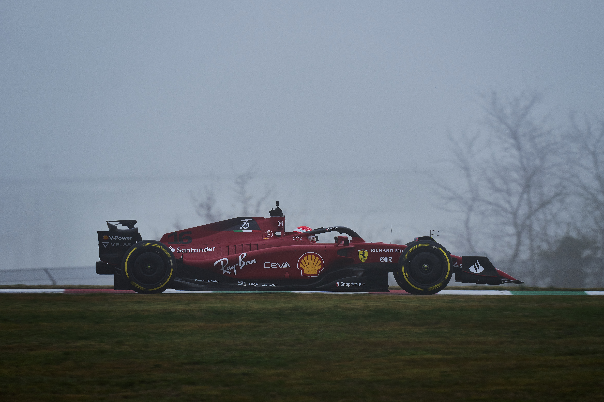

Hola yo soy
Victor Carmen Miguel

Formación Académica
Estudiante de Ingeniería en Sistemas Computacionales
Escuela Superior de Cómputo IPN
Técnico en Computación
Centro de Estudios Científicos y Tecnológicos No.3 "Estanislao Ramírez Ruiz"
Correo eléctronico
carmenmiguelvictor1@gmail.com
Redes Sociales
Mis Hobbies
-

Programación
Aunque no soy muy bueno, me encanta siempre aprender nuevas cosas.
-

Fútbol
Es mi deporte favorito, me encanta jugarlo y también verlo.
-
Videojuegos
Creo que como a muchos los videojuegos son uno de mis hobies favoritos, en especial me gustan los juegos de carreras.
-

Autos
Aunque no soy muy apacionado, me gustan los autos y el mundo del deporte motor, por lo que soy muy fan de la Formula 1.
Acerca de Criptográfia
Alan Turing(1912-1954)
Alan Turing nació en Gran Bretaña en el año 1912 y gracias a sus conocimientos en matemáticas, pudo realizar grandes aportes a la recreación de la máquina Enigma, que fue utilizada por casi toda la Segunda Guerra Mundial por Alemania. Alan Turing, llegó a ser director de la división Naval Enigma, que básicamente era una división de inteligencia dedicada al estudio de la máquina Enigma. Sus contribuciones durante todo el tiempo que estuvo en esta división, fueron de gran ayuda para la comprensión de Enigma. Incluso, Turing llegó a trabajar de manera directa con Rejewski, que se puede considerar como el personaje estrella de la criptografía durante la tercera época de la criptografía.